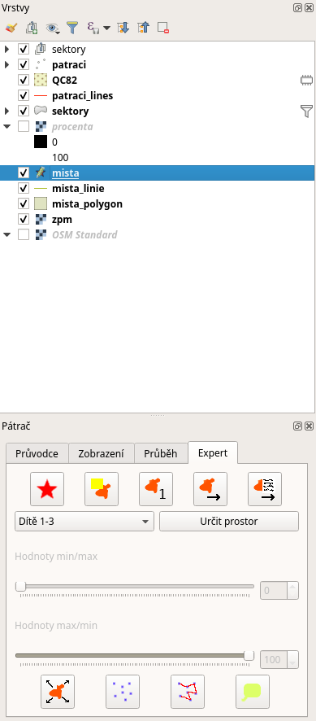
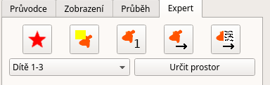
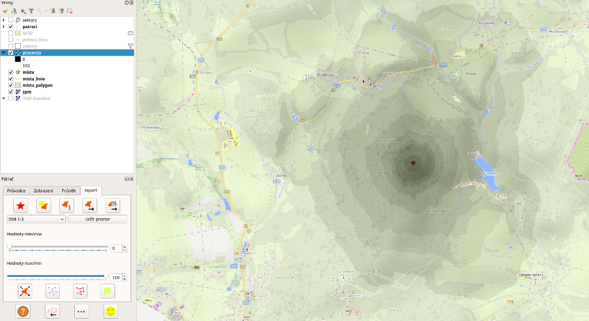
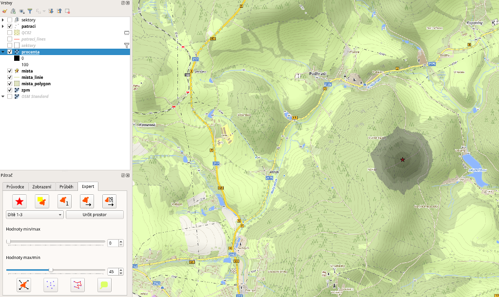
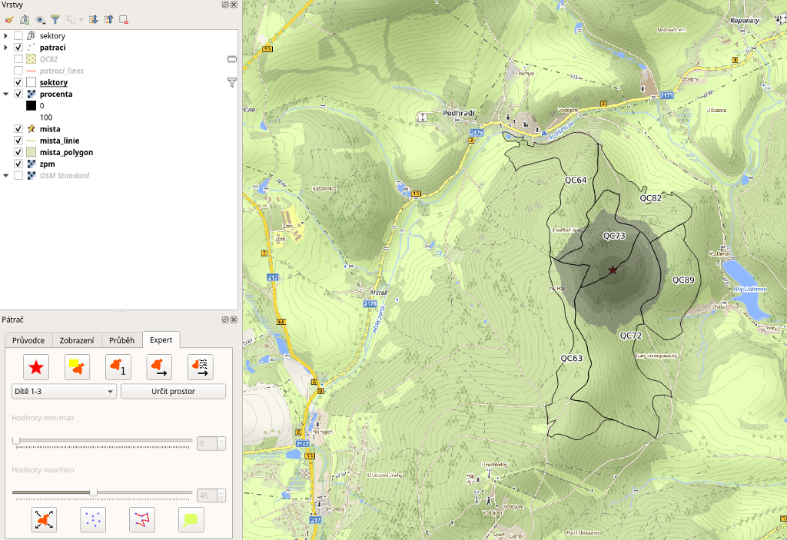
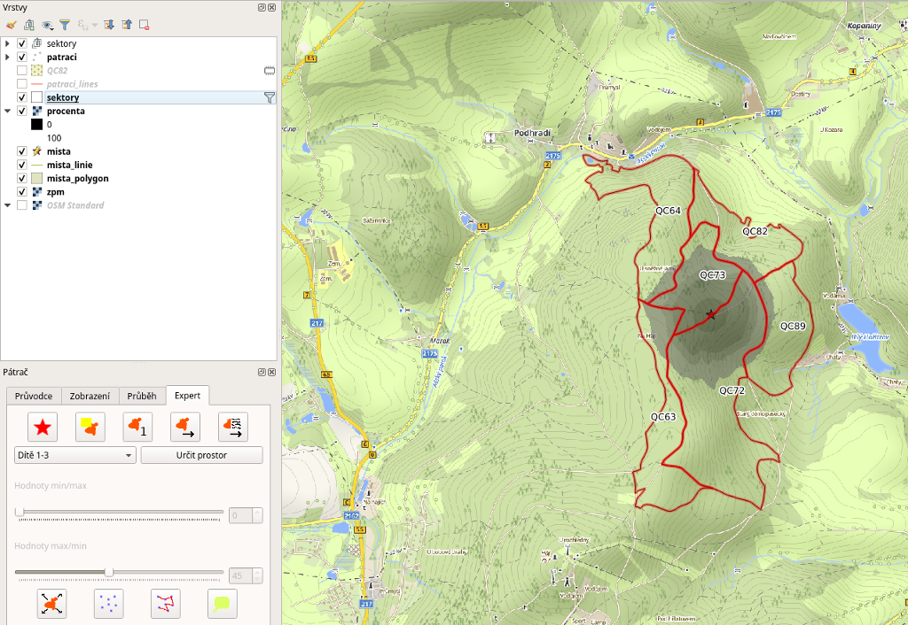
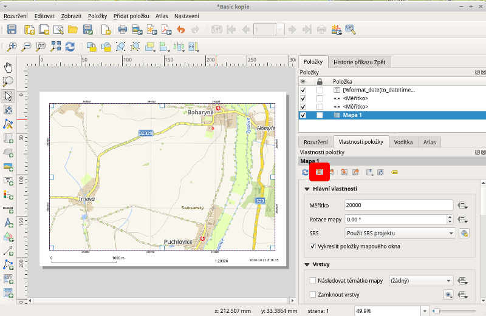
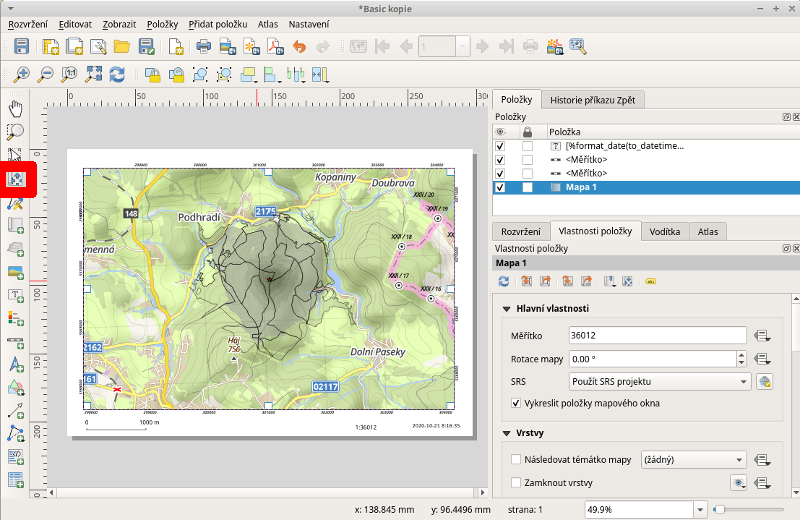

Expert
Karta expert nabízí stejné možnosti jako průvodce, jen je možné kroky libovolně přeskakovat, ale je nutné vědět v jakém pořadí je možno postupovat.
Navíc nabízí některé funkce
- Nastavení minimální hodnoty pravděpodobnosti pro výběr sektorů. Může se hodit, v případě, že chceme ignorovat blízká místa.
- Rozšíření oblasti v případě, že se pátrání dostane mimo původně vytvořený rozsah (jiná vesnice)
- Načtení pozic pátračů - je nutno, aby byli vybaveni zařízením, které odesílá pozici - např. GINA tracker.
- Načtení stop pátračů - je nutno, aby byli vybaveni zařízením, které odesílá pozici - např. GINA tracker.
- Odesílání a čtení zpráv. Aktuálně funguje pouze ve spojení s prototypem Pátrač Monitor, který se již dále nebude vyvíjet.
V budoucnosti plánujeme komunikaci s HS messengerem, případně pokud to bude organizačně možné (technic jistě je) tak s MBP.
Stanovení míst
Prvním krokem je stanovení míst posledního spatření.
K tomuto slouží vrstvy mista, mista_linie, mista_polygon. Obvykle se místa budou zadávat jako body, tedy do vrstvy mista. Zadání jako linie nebo polygon (plocha) je možné také, ale vyžaduje
následný krok převodu na body, protože výpočetní modul pracuje pouze s body.
Editace vrstvy mista
Editace se provádí v minimálně čtyřech krocích
- Výběr vrstvy ze seznamu vrstev, kliknutím na vrstvu mista.

- Zapnutí editace pomocí tlačítka Editace
 .
.
- Vložení bodu pomocí tlačítka Vložení kliknutí do mapy na místo spatření a vyplnění údajů o bodu
.
V
atributech se vyplňuje identifikátor místa, datum a čas spatření (pokud není přesné, pak rozsahem od do (např. spatřen mezi 10 a 12 hod.) a váhou bodu. Váha bodu udává jak moc se dá danému
svědectví důvěřovat. Váhy jsou od 0 do 9. 0 znamená, že se bod vůbec nepoužije. 9 znamená nejvyšší váhu. Pokud si nejste jisti, zadávejte všem bodům číslo 1. Po vložení bodu se bod objeví
v mapě jako červená hvězdička.
- Uložení editace se realizuje opět pomocí tlačítka Editace , kdy aplikace vyzve k uložení dat.
Místa je možno vkládat ještě jinými způsoby, což je popsáno v části Další funkce.
Určení pravděpodobnosti výskytu
K tomuto slouží rozbalovací seznam s typem osoby a tlačítko Určit prostor
.
Výpočet chvíli trvá (v závislosti na počtu bodů, velikosti oblasti a rychlosti počítače), ale na běžném notebooku by pro oblast do 10x10 km a 2 body neměl přesáhnout 5 minut.
Pravděpodobnost je následně zobrazena do vrstvy procenta.

Omezení rozsahu pátrání
Propátrání oblasti, kde by byla až 95% šance osobu nalézt je nereálné, proto je nutné oblast omezit. K tomu slouží posuvník, kde se stanovují procenta. např. 45% u Hodnoty max/min znamenají
oblast, kde je šance až 45%.

Výběr sektorů
Sektory, které zasahují do vybrané oblasti je možno následně vybrat pomocí tlačítka  .
.

Export sektorů
Sektory, které byly vybrány je možné exportovat do GPX souborů pro GPS přijímače pomocí tlačítka  .
.

Vyexportované soubory jsou uloženy do adresáře projektu do složky sektory/gpx. Cesta k projektu je zobrazena v nastavení.
Export sektorů s reportem
Export je možné doplnit reportem o sektorech. Report obsahuje informace o typech povrchu, odhadech o potřebě počtu pátračů a času pro prohledání dle stavu jednotek, které jsou k dispozici.
Export s reportem se realizuje pomocí tlačítka .

Vyexportované soubory jsou uloženy do adresáře projektu do složky sektory/gpx. Cesta k projektu je zobrazena v nastavení.
Tisk
Mapu pro tisk je možno vytvořit ve tvůrci map. Ten je k dispozici přes nabídku Projekt/Tvorba map/Basic.

Po otevření tvůrce mapy je obvykle mapa prázdná. Je nutné nejdříve vybrat v seznamu prvků mapu a následně se pomocí tlačítka přiblížit na rozsah aktuálně prohlížené mapy.

Případně je možné ještě následně po zobrazení mapy, upravit měřítko

Mapu je možné exportovat do PDF pro tisk pomocí tlačítka .
Nalezení osoby
V případě nálezu osoby je velmi užitečné pro další pátrání evidovat informace o nálezu. K tomuto slouží ikona  . Po kliknutí na ikonu je očekáváno od uživatele
kliknutí do mapy do místa nálezu. Po kliknutí do mapy se zobrazí okno pro zadání informací o nálezu.
. Po kliknutí na ikonu je očekáváno od uživatele
kliknutí do mapy do místa nálezu. Po kliknutí do mapy se zobrazí okno pro zadání informací o nálezu.

Takto zaznamenaný nález bude následně využit k vylepšení stávající aplikace, zejména v oblasti predicke pravděpdobnosti výskytu.


 je možné importovat data z GPS přijímače. Funkce aktuálně podporuje pouze nové přijímače, které připojují GPS jako USB zařízení. Do budoucna se
nepředpokládá podpora starších zařízení.
je možné importovat data z GPS přijímače. Funkce aktuálně podporuje pouze nové přijímače, které připojují GPS jako USB zařízení. Do budoucna se
nepředpokládá podpora starších zařízení. je možné zobrazit poslední pozice pátračů, kteří jsou připojeni on-line. Tato funkce vyžaduje připojení k internetu.
je možné zobrazit poslední pozice pátračů, kteří jsou připojeni on-line. Tato funkce vyžaduje připojení k internetu. je možné zobrazit stopy pátračů, kteří jsou připojeni on-line. Tato funkce vyžaduje připojení k internetu.
je možné zobrazit stopy pátračů, kteří jsou připojeni on-line. Tato funkce vyžaduje připojení k internetu. je možné pátračům, kteří jsou připojeni on-line zaslat zprávu. Tato funkce vyžaduje připojení k internetu.
je možné pátračům, kteří jsou připojeni on-line zaslat zprávu. Tato funkce vyžaduje připojení k internetu.
 je možné upravovat body pozorování.
je možné upravovat body pozorování.